Price Controls
Source of the figures: both figures below are from "Economics", Mankiw & Taylor, 7th. Ed, 2026, Chapter 8 "Supply, Demand and Government Policies". They are not scans: they were regenerated with AI so they display nicely on this website. The content and numbers follow the book.

Figure 8.1: A price ceiling in the rental market. Source: textbook (see above), p. 176. Regenerated with AI.

Figure 8.2: A price floor in the alcohol market. Source: textbook (see above), p. 178. Regenerated with AI.
Basically, all you guys need to know is:
- a price floor is a fixed minimum price. Therefore, it only matters (i.e. it is "binding") if we are below it.
If we are above the minimum, we don't care, because there isn't a set maximum, only a minimum.
- a price ceiling is the opposite, so basically a fixed maximum price. A maximum only matters to us if we are
above it. If we are below the maximum, who cares?
On surpluses and shortages:
-
If the equilibrium price is below the price floor then we have a surplus, as seen in Fig. 8.2b.
This is because the minimum allowed price is above the ideal equlibrium price, so there is
too much supply and too little demand.
-
If the equilibrium price is above the price celing then we have a shortage, as seen in Fig. 8.1b.
This is because the ideal price isn't attainable since it is above the maximum price suppliers can set.
So at this lower price, demand is obviously high but sellers aren't producing enough to meet it.
- in the other two cases nothing happens
Positive and normative:
-
Positive statements describe facts. Note that when you ask someone if they're sure, you'll
often hear "positive" as a reply. You can only be "positive" about a fact.
-
Normative statements describe what ought to be, rather than what is. Note that a "norm" is
something usual or expected. Similarly, a "normative" statement asserts that something should
be a certain way.
Quiz
Answers
- A legal maximum price
- Nothing, the ceiling isn't binding
- A shortage of 2 million m²
- Some leave the market or spend less on upkeep
- Waiting lists, black markets, or landlords picking favourites
- Nothing, the floor isn't binding
- A surplus of 3 million units
- Normative (it depends on values and beliefs)